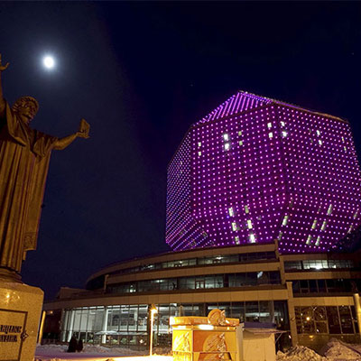
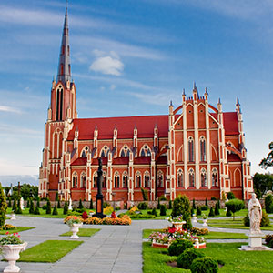

Обо мне
Каб любіць Беларусь нашу мілую, трэба ў розных краях пабываць!
Люблю Беларусь
Моя Беларусь – самая лучшая. Сомневаетесь? Приезжайте – и я покажу Вам настоящую Беларусь. Предлагаю вместе познакомиться с историей, загадками и тайнами белорусских городов и местечек.
Аттестована
21.10.2016 года стала аттестованным экскурсоводом после сдачи экзамена в Национальном агентстве по туризму. Аттестация действительна до 21.10.2021г.
Опыт работы
Экскурсии начала проводить еще в студенческие годы. Второй год я участвую в “Фэсце экскурсаводаў”, где с удовольствием рассказываю об учебной жизни Минска. Проходила экскурсионную практику в ТЭУП «Беларустурист».

Здравствуй, мой дорогой турист!
Меня зовут Инна, мне 22. Я экскурсовод. Выпускница исторического факультета БГУ, специализация – Культурное наследие и туризм.
Еще в школе мне очень нравилось путешествовать по Беларуси. В рамках школьных экскурсий мы ежегодно посещали различные города. В 8 классе, когда мы были на экскурсии в Бресте, я «наблюдала» за нашим экскурсоводом и мысленно «примеряла» на себя образ гида и «организатора какого-нибудь путешествия». С этого момента я серьезно задумалась о профессии экскурсовода и постепенно начала развиваться в этом направлении. Как оказалось, процесс этот бесконечен, поэтому каждая экскурсия помогает развиваться, совершенствовать свои профессиональные качества, узнавать что-то новое и, конечно, знакомиться и общаться с интересными людьми. Это здорово!
С удовольствием проведу для Вас и Ваших близких экскурсию по Беларуси!
Готова организовтаь «тур под ключ» с проживанием, питанием, посещением музеем, аквапарка, театров, агроусадеб…
Буду рада Вас видеть в Беларуси! Да сустрэчы ў Беларусі!
Экскурсии
Места, которые должен посетить каждый -)
1. Обзорная экскурсия по Минску
Архитектура лучших проспектов и площадей, зелень парков и улиц белорусской столицы… Ожившая история и личности, повлиявшие на ход развития Минска. Легенды и загадки, интриги и расследования – все это Вас ждет в автобусно-пешеходной экскурсии по Минску.
Продолжительность - 3 часа

2. Пешеходная экскурсия по Минску
Во время экскурсии Вы познакомитесь с архитектурным объектом, являющимся претендентом на включение Список Всемирного нематериального наследия ЮНЕСКО, - проспектом Независимости и примыкающей к нему - площади Независимости.
Продолжительность - 2 часа

3. Вечерний Минск
Вечерняя подсветка города создаст Вам и Вашим близким романтическое и легкое настроение. Вы увидите в выигрышном свете одну из главных достопримечательностей Минска – Национальную библиотеку
Продолжительность - 2,5 часа

4. Мир - Несвиж
«Мир — Несвиж» - самая популярная и востребованная экскурсия во все времена года, познакомит Вас с самыми ценными памятниками Беларуси, внесенными в список Всемирного наследия ЮНЕСКО, Мирским замком и дворцово-парковым комплексом в Несвиже.
Продолжительность – 4 часа.

5. Дудутки
Дудутки - один из самых популярных и посещаемых музеев Беларуси, в котором можно не только познавательно и интересно провести время, но и отдохнуть, продегустировать продукцию местного производства, в том числе самогон на броваре, покататься на лошадях, прогуляться по зоосаду.
Продолжительность - 5 часов

6. Беловежская пуща – поместье Деда Мороза
Экскурсия подарит Вам уникальную возможность познакомиться со старейшим памятником природы, внесенным в Список Всемирного наследия ЮНЕСКО - Беловежской пущей - одним из главных природных заповедников Европы, крупным туристическим центром Беларуси, куда съезжаются туристы со всего мира.
Продолжительность - 16 часов

7. «Островецкая кругосветка»
Во время экскурсии Вы познакомитесь с уникальным явлением белорусской культуры - местечко. С Вами мы остановимся и узнаем занимательные истории 6 местечек. Проездом увидим столько же. И да, конечно, нас ждет знакомство с одним из самых красивых костелов Беларуси – костелом Святой Троицы в Гервятах начала XX века.
Продолжительность – 10 часов.

8. Рубежевичи – Сула
Панскі маёнтак "Сула" - элитный центр культурной и светской жизни XVIII века. Сегодня эта восстановленная усадьба рода Ленских представляет собой место, где можно не только отдохнуть, но и познакомиться с историей белорусских земель от времен языческих верований, эпохи средневекового рыцарства, до времен балов и салонов XVIII- XIX веков.
Продолжительность - 6 часов

9. Логойск – агроэкоусадьба «Гаенскія вытокі»
В Логойске Вы сможете набрать воды из святого источника, а также увидите главные храмы города. Затем нас ждет экскурсия и угощения от дядьки Сергея в агроэкоусадьбе «Гаенскія вытокі». Увлекательно, легко и вкусно! Поехали!
Продолжительность - 16 часов
10. «Вёрсты памяти Старо-Виленского шляха»
Экскурсия познакомит Вас с замечательным краем, который давным-давно назывался Черной Русью, а в 1930-х гг. – Западной Беларусью. Вас ждут уникальные архитектурные памятники, а с ними увлекательные истории об уроженцах этих мест и о произошедших здесь событиях. Во время экскурсии мы посетим такие места, как Залесье, Сморгонь, Кушляны, Ошмяны…
Продолжительность – 10 часов.

11. Линия Сталина
Историко-культурный комплекс «Линия Сталина» – один из наиболее грандиозных фортификационных ансамблей на территории Беларуси. Историко-культурный комплекс ”Линия Сталина” представляет собой военно-исторический музей под открытым небом. Историческую основу музея составляют ДОТы Минского укрепрайона.
Продолжительность - 5 часов

12. д. Станьково – ЦЭТ «Станьково»
Экскурсия в Станьково познакомит нас с выдающимся магнатским родом, графами Чапскими. Эта небольшая деревня была родовым имением графов, где была построена усадьба и знаменитая «Скарбница», которая сохранилась и сейчас.
Продолжительность - 5 часов

13. Хатынь – Курган Славы
Мемориальный комплекс «Хатынь» - памятник сотням уничтоженных, сожженных белорусских деревень. Деревня, которая была сожжена вместе со 149 жителями. Мертвая деревня, которая не оставит никого равнодушным.
Продолжительность - 4 часа

От
570 р. на человека
в стоимость не
включены билеты и питание
в стоимость не
включены билеты и питание

{kind=link}
{kind=link}
{kind=link}